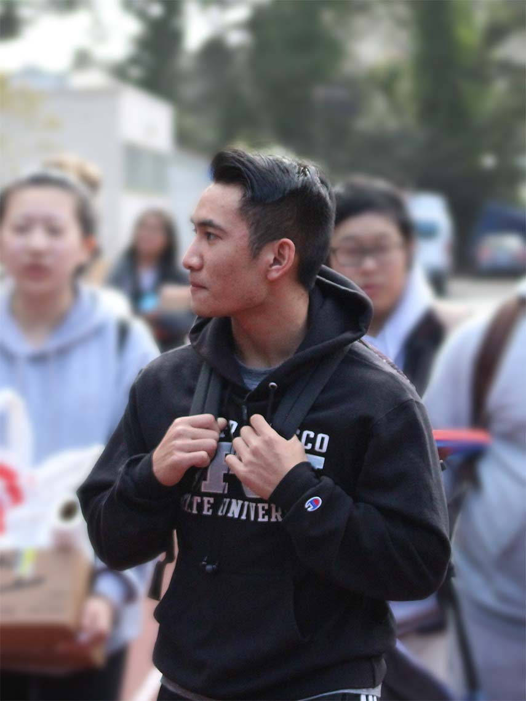

ABOUT ME
UX Design, Interaction Design, Visual Design, Life-long Student.
As a student who is curious about modernist typography and user-centered design, I believe that the harmony of design and utility is a necessity for all products. Design is in no doubt futile without the combination of branding, research, and function. Therefore, it is imperative that team collaboration would be an objective in designer qualities. I'm a 5th-year Visual Communications Design student at San Francisco State University, emphasizing UX and UI Design. In my free time, I love going to the gym, listening to EDM, and making videos.
I am a student who loves to create immersive products that elevate the user experience in creative and subtle ways. Like the simple intricacies of life, a collection of unnoticed or pleasant delicacies enhances the user journey in ways that users might not even think about. I believe that the beauty of UX Design is defined by its creative innovation and systematic approach, to make things easier for user intuition.